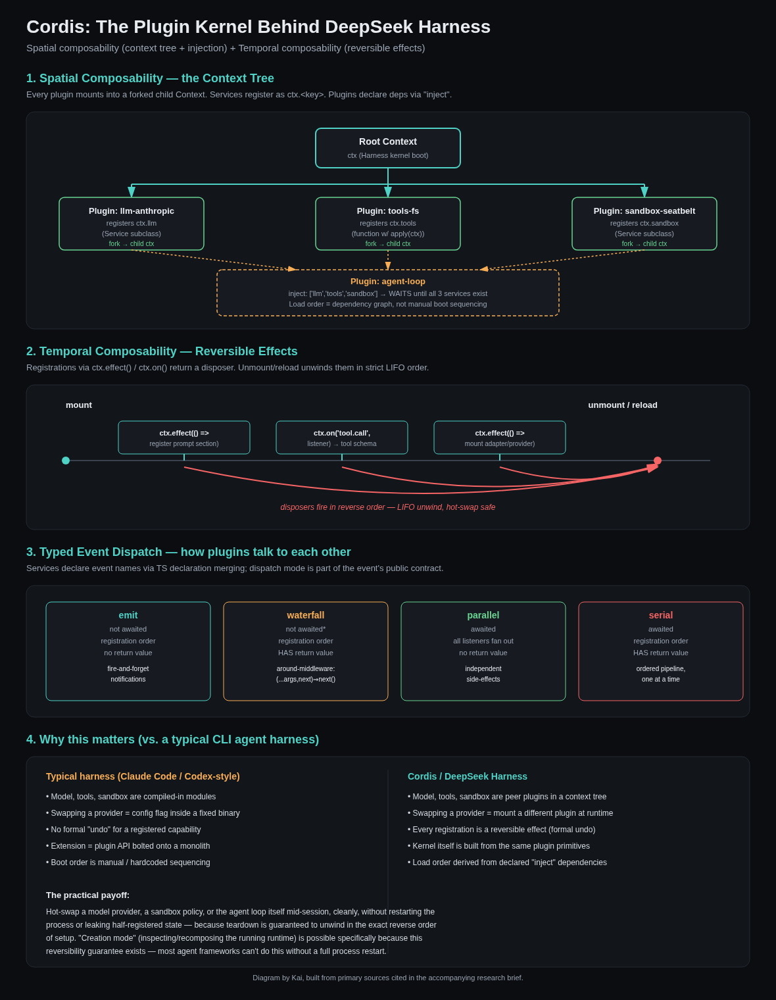

▸ html / PUBLISHED OUTPUT
DeepSeek Harness — Research Brief
What DeepSeek Harness (dsh) is, why it's getting popular, whether it integrates with Claude Code/Codex/OpenCode, benchmarks, strengths, and downsides.
DeepSeek Harness (dsh): Is It Worth Your Time?
A compact, opinionated brief on what DeepSeek Harness is, why it's getting attention, whether it plugs into Claude Code / Codex / OpenCode-style workflows, and where it actually stands vs. the incumbents.
Bottom line
Worth a look, not worth a switch — yet. DeepSeek Harness (dsh) is a genuinely interesting piece of infrastructure: an open-source, MIT-licensed agent runtime built on a real plugin kernel (Cordis), not a thin CLI wrapper. It's model-agnostic by design — Claude, GPT, Gemini, Kimi and local OpenAI-compatible endpoints all plug in as provider adapters, same as it runs DeepSeek's own V4-Pro/V4-Flash. The economics (V4-Pro at a fraction of Claude/GPT-5 pricing, comparable SWE-bench numbers) are the real headline. But it's an unstable v0.1 developer preview with expected breaking changes — not something to trust for daily driving yet. Clone it, poke at the plugin architecture, watch the benchmark numbers mature. Don't migrate your main workflow off Claude Code/Codex/OpenCode for it today.
What it actually is
DeepSeek Harness is an open-source (MIT license) agentic coding runtime released by DeepSeek AI as a developer preview, alongside their V4-Pro model launch. It's Node.js-based, ships a CLI (dsh) and a web UI, and its core design principle is "everything is a plugin" — models, tools, skills, sessions, sandboxes, storage, the agent loop itself, and even the scheduling logic are all swappable plugin components rather than hardcoded runtime internals.
The architectural bet: Cordis
The plugin kernel underneath is called Cordis, formalized in DeepSeek's own paper "A Programming Paradigm for Spatiotemporal Composability." Two ideas do the real work:
- Temporal composability — a plugin's effects can be fully reverted/undone, so components can be hot-swapped or rolled back cleanly mid-session.
- Spatial composability — components declare dependencies and react to each other automatically, instead of being wired together by hand.
Practically, this means you can swap the model provider, the sandbox, or the tool loop without forking the whole harness — which is the actual differentiator vs. Claude Code, Codex CLI, or OpenCode, all of which are far more monolithic under the hood.
Deep dive: how Cordis actually works
Cordis is a separate open-source project (cordiverse/cordis, MIT, "under active development, API not yet stable") that DeepSeek Harness vendors in as its plugin kernel. It's formalized in the paper "A Programming Paradigm for Spatiotemporal Composability", and DeepSeek Harness ships its own plain-English walkthrough in docs/cordis-primer.md — that primer is the clearest primary source and most of what follows is drawn directly from it.

The five ideas, straight from the primer
- A plugin is an object that implements Service. Either a function with optional
injectandapply(ctx)fields, or aServicesubclass whose lifecycle Cordis manages. - A context is a repository of services. A service claims a stable key like
ctx.tools,ctx.llm, orctx.sessions. Other plugins look services up by key, never by importing a concrete implementation — this is what makes providers swappable. - Dependencies are declared via
inject. A plugin that names required services simply waits until those services exist. Load order falls out of the dependency graph instead of being hand-sequenced at boot. - Typed events for communication. Services declare event names via TypeScript declaration merging, then dispatch as one of four modes —
emit(fire-and-forget),waterfall(around-middleware, can short-circuit),parallel(fan-out, awaited), orserial(ordered pipeline, awaited, has a return value). - Registrations are reversible effects. Prompt sections, tool schemas, adapters, providers, and listeners all install through
ctx.effect()orctx.on(), both of which return a disposer. Teardown unwinds disposers in strict reverse (LIFO) order — this is the actual mechanism behind hot-swapping and clean reload.
Why this is a structurally different bet
Most coding-agent CLIs (Claude Code, Codex, OpenCode) treat the model, tools, and sandbox as compiled-in modules — swapping a provider is a config flag inside an otherwise fixed binary, and there's no formal "undo" for a registered capability. Cordis instead builds the harness itself out of the same plugin primitives an end user would use to extend it: the LLM adapter, the tool pipeline, and the sandbox are peer plugins in a context tree, not privileged internals.
The payoff is concrete: because every registration carries a guaranteed reverse operation, DeepSeek Harness can hot-swap a model provider, a sandbox policy, or even the agent loop mid-session without restarting the process or leaking half-registered state. That's also the mechanism behind Harness's "Creation mode" — inspecting and recomposing the live runtime without a restart, which most agent frameworks simply can't do.
Honest caveat: Cordis itself is pre-1.0 ("API not yet stable and may change without notice" per its own README). The elegance of the design doesn't offset the instability of the surface built on it — see Downsides below.
Why it's getting popular right now
1. Price shock
V4-Pro API pricing undercuts GPT-5.6 by ~14x and Claude Opus 4.8 by ~28–46x on output tokens, while landing near parity on SWE-bench Verified. When a frontier-adjacent coding model costs a fraction of the incumbents, developers show up to test-drive the harness that ships with it.
2. Genuine architecture novelty
Most "coding agent" launches in 2025–26 (Qwen Code, Trae Agent, Kimi CLI, ZCode) are variations on the same CLI-loop pattern. Harness's plugin-first, reversible-effects design is a structurally different bet, and it's catching attention from people building on agent frameworks, not just people who want a coding assistant.
3. Full OSS transparency
MIT-licensed, GitHub-hosted, docs and BENCHMARK.md published alongside the code. Compare to Claude Code (source-available but Anthropic-controlled) — Harness invites forking and inspection in a way the incumbents don't.
4. Distribution via DeepSeek's existing user base
DeepSeek already has a large developer following from V3/R1. Shipping Harness alongside V4-Pro puts it in front of a huge audience on day one — same playbook as Anthropic shipping Claude Code with Claude models.
Multi-model support: does it work with Claude Code / Codex / OpenCode?
Short answer: yes, model-agnostic — but "integration" means "another provider inside dsh," not interop with those other harnesses.
- Harness supports roughly 40 model providers through plugin adapters, including OpenAI, Anthropic (Claude), Google (Gemini), and Kimi (Moonshot) — configured the same way you'd add a custom provider in any modern CLI harness.
- Any OpenAI-compatible endpoint (local server, self-hosted router, your own gateway) can be pointed at via a custom provider or
DEEPSEEK_BASE_URL-style override. - V4-Pro on the API side also natively supports the OpenAI Responses API and has explicit Codex integration — meaning you can run DeepSeek's model inside OpenAI's Codex CLI, not just DeepSeek's own harness.
- What it does not do: run as a plugin/backend inside Claude Code or OpenCode — those are separate, closed-loop runtimes. The interop is one level: "swap the model," not "swap the harness."
Practical implication for you: if the goal is "use DeepSeek's model quality/price inside a harness I already trust," the more mature path today is running DeepSeek V4-Pro/Flash through Claude Code's or Codex's own custom-provider config (both support OpenAI-compatible endpoints) — not switching to dsh itself. If the goal is "experiment with a genuinely different plugin architecture," that's where Harness earns its own evaluation.
Benchmarks
| Model / Harness combo | SWE-bench Verified | Terminal-Bench 2.1 | Notes |
|---|---|---|---|
| DeepSeek V4-Pro 0813 | 80.6% (self-reported) / ~96.4% on some third-party leaderboards | 87.9% | Numbers vary a lot by source/methodology — treat with caution (see below) |
| DeepSeek V4-Flash 0731 (dsh minimal mode) | — | 82.7% (445-trial independent run) | "Minimal mode" harness config not yet public at time of writing |
| Claude Opus 4.8 | 88.6% | — | Reference point |
| Kimi K3 | 93.4% | — | Also open-weight, ahead of several closed models |
| Grok 4.6 | — | 88.4% | Reference point |
Caveat: SWE-bench Verified numbers for V4-Pro range from 80.6% (DeepSeek's own report) to 96.4% (a third-party leaderboard) depending on scaffold/harness config used at eval time — a >15pt spread is a red flag for reproducibility, not a benchmark you should take at face value. A separate, harder eval (DeepSWE, from-scratch tasks) reportedly shows V4-Pro passing only ~8% — a reminder that "SWE-bench Verified" and "real from-scratch engineering task" are very different difficulty regimes. Weigh benchmark claims accordingly.
Strengths
- Composable by design — swap models, tools, sandboxes, and even the agent loop without forking; genuinely different from monolithic CLI harnesses.
- Programmatic tool calling — the model emits one piece of orchestrating code instead of many sequential tool calls, cutting round-trips and improving reliability on multi-step tasks.
- Sandbox presets — ships four security presets (including seatbelt/macOS and Windows ACL modes) out of the box, rather than leaving sandboxing entirely to the user.
- "Creation mode" — lets you inspect the live runtime and compose new plugin configurations without restarting, useful if you actually want to build on top of it rather than just use it.
- Cost-to-capability ratio on the reference model — even with benchmark-number caveats, V4-Pro/Flash at this price point is a legitimate reason to test it for high-volume agentic workloads.
Downsides
- Explicitly unstable. DeepSeek's own docs call it a developer preview with core plugins/APIs "still evolving" — several independent write-ups flag "rapid rc churn" and no version tags as a real adoption risk.
- Benchmark claims aren't settled. The SWE-bench spread (80.6% vs 96.4% depending on source) and the much lower DeepSWE score (~8%) mean the headline numbers need independent reproduction before you plan around them.
- Young ecosystem. Fewer plugins, less community tooling, fewer battle-tested workflows than Claude Code or Codex, which have had a longer production run.
- "Minimal mode" (used for some of the strongest published numbers) wasn't public at launch — meaning some of the more attractive benchmark results can't currently be reproduced by third parties.
- Not a drop-in replacement for your current harness — different session format, different plugin API, different mental model. Migration cost is real if you're deep in Claude Code/Codex workflows already.
Should you try it?
Try it if…
- You're curious about agent-framework architecture (Cordis is a legitimately interesting design, worth reading the paper even independent of dsh itself).
- You want to benchmark DeepSeek V4-Pro/Flash cheaply for a side project or batch/agentic workload where cost matters more than polish.
- You're open to isolated, non-critical experiments — not your daily driver repo.
Skip it for now if…
- You need a stable daily-driver harness — stick with Claude Code / Codex / OpenCode, which are production-hardened.
- You want the DeepSeek model specifically — just point Claude Code's or Codex's custom-provider config at DeepSeek's OpenAI-compatible endpoint instead of switching harnesses.
- Reproducible benchmarks matter more to you than novelty — wait for independent, stable-tag re-runs.
Quick start (if you want to poke at it)
git clone https://github.com/deepseek-ai/deepseek-harness.git cd deepseek-harness pnpm install pnpm run build pnpm dsh web # launches the web UI
Repo: github.com/deepseek-ai/deepseek-harness · Official docs: deepseek.com/harness